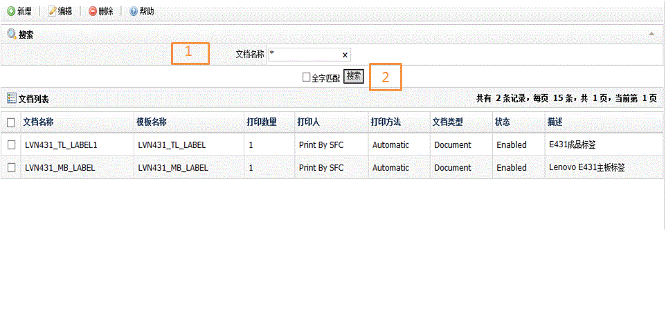
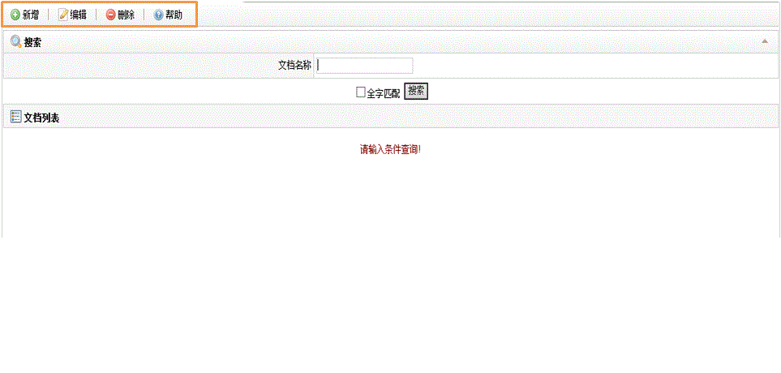
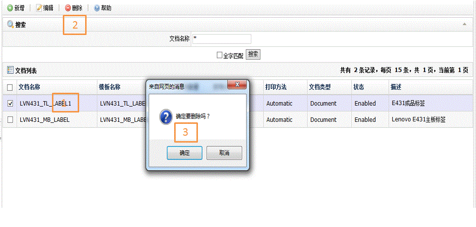

| 字段名 | 描述 |
| 文档名称 | 文档名称 |
| 模板名称 | 所属模版名称 |
| 打印数量 | 需要打印数量 |
| 打印人 | 指定打印人： 1.Print By SFC 2.Print By Shop Order 3.Print By Process Lot 4.Print By Container |
| 打印方法 | 指定打印方法： 1.Automatic 2.Manual 3.Reprint 4.All |
| 文档类型 | 文档类型： 1.Document 2.Lable 3.Traveler |
| 状态 | 状态： 1.Enabled 2.Disabled |
| 描述 | 文档描述 |


